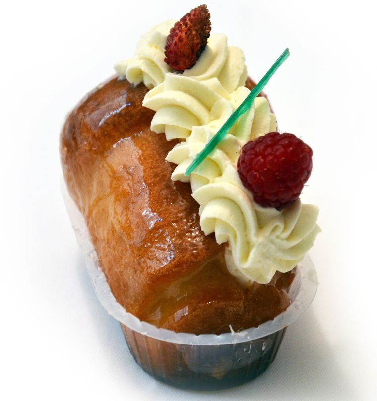
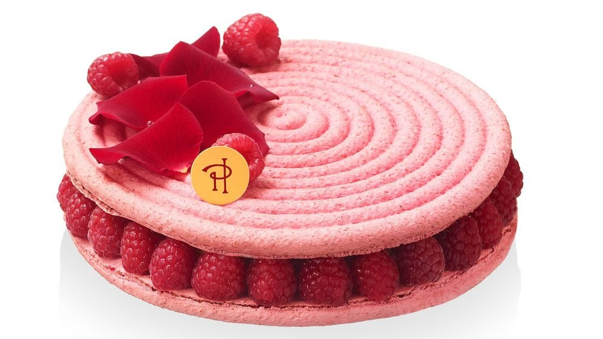

La pâtisserie a ses grands classiques, mais aussi ses desserts signatures, créés par des pâtissiers qui ont marqué leur temps et sont entrés dans l'histoire
| Index | Nom du gateau | patissier | photo | composition | où peut-on l'acheter |
|---|---|---|---|---|---|
| 1 | Le baba au rhum | Nicolas Stohrer |  | pâte à brioche imbibée de vin de Malaga et parfumée au safran, crème pâtissière et fruits secs |
La maison Stohrer propose encore trois versions différentes en magasin: L'Ali Baba composé d'une pâte à baba arrosée de rhum et garnie de crème pâtissière et de raisins de Corinthe; le baba au rhum nature (4,30 euros); et le baba au rhum garni de crème chantilly (4,50 euros). |
| 2 | Le Mont-blanc | Antoine Rumpelmayer
|
| meringue, chantilly légère et vermicelles de crème de marrons. |
Dans toutes les boutiques et salon de thé d'Angelina en France comme à l'étranger. A noter que la recette du Mont-blanc n'a que très peu changé malgré les années, attendez-vous donc à une version assez sucrée |
|
| 3 | La fondante au kirsch | Christophe Felder
|
| génoise spéciale, crème pâtissière, meringue italienne, crème au beurre légère, crème mousseline au kirsch et sirop au kirsch. |
A la pâtisserie Oppé à Mutzig, en Alsace. |
|
| 4 | La tarte au chocolat | Robert Linxe
|
| pâte sablée (sucrée ou brisée), ganache de chocolat (noir, lait ou blanc), décors (chocolat râpé, meringue, glaçage, chantilly, etc). |
A La Maison du chocolat où Nicolas Cloiseau, Meilleur Ouvrier de France chocolatier, propose sa version rectangulaire de la tarte respectant les fondamentaux de la recette originale avec un fond de pâte doré et croquant, |
garni d'une ganache de chocolat noir légèrement corsé et décoré de chocolat noir à croquer (5,90 euros). |
| 5 | L'Ispahan | Pierre Hermé
|  |
biscuit macaron rose, meringue italienne, crèmeaux pétales de roses, litchis et framboises fraîches. |
Dans les différentes boutiques de Pierre Hermé dans le monde entier,mais aussi en livraison à Paris et en région parisienne (7,50 euros). |
|
| 6 | Religieuse au caramel beurre salé | Christophe Michalak
|
| pâte à choux, crémeux caramel, crème chantilly caramel, craquelin, fondant et fudge. |
Sous le nom de Miss K, dans les trois points de vente des pâtisseries Michalak Paris(9 euros). |
|
| Index | Nom du gateau | patissier | photo | composition | où peut-on l'acheter |